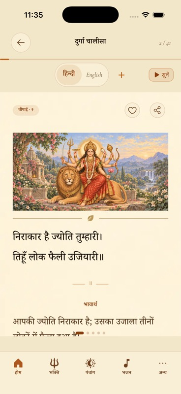
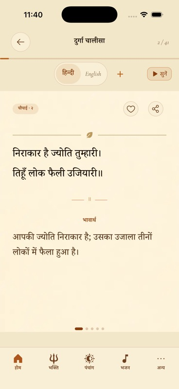
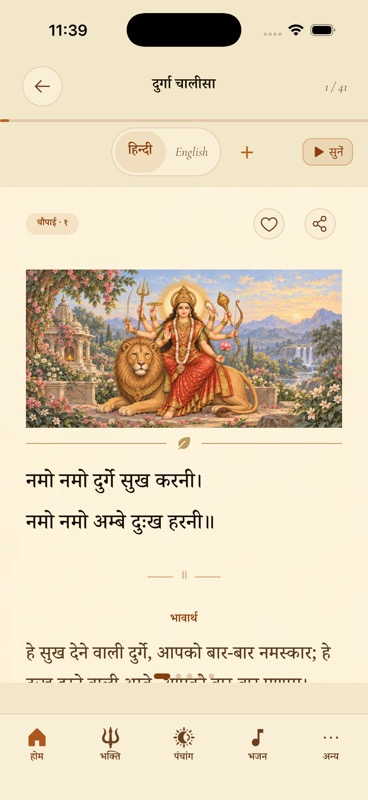
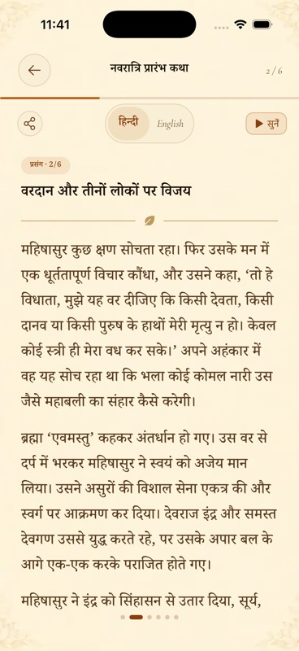
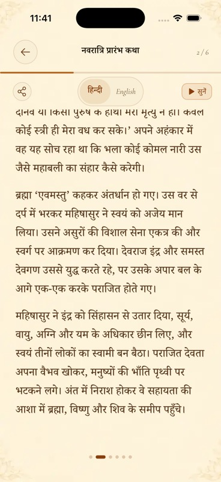

More room for reading
One illustration on the opening card of each reading or chapter. Later cards begin with the text, without an image or an empty image frame. The parchment and gold divider stay.
The same verse, before and after
Durga Chalisa, card 2 of 41 · Hindi · Standard text size · same iPhone simulator. These are actual native screenshots.
BeforeA repeated image pushes the meaning below the fold.
AfterThe full verse and meaning fit on screen.
Opening cards keep their artwork
Durga Chalisa · card 1The complete banner is still shown once.
Navratri Katha · section 1The story opens with its illustration.
Katha continuation
Later sections start reading immediately. Long prose still scrolls normally to its final paragraph.
Section 2 · beginning
Section 2 · scrolled to the end
Applied across 21 paginated verse readers and both section-based Katha readers. R2 assets, quiet reading backgrounds and the persistent cache are unchanged. Release simulator build, TypeScript, lint and 2,201 tests passed. Native visual inspection here covers Chalisa and Katha; it is not a physical-device or frame-rate benchmark.
Implementation and validation record